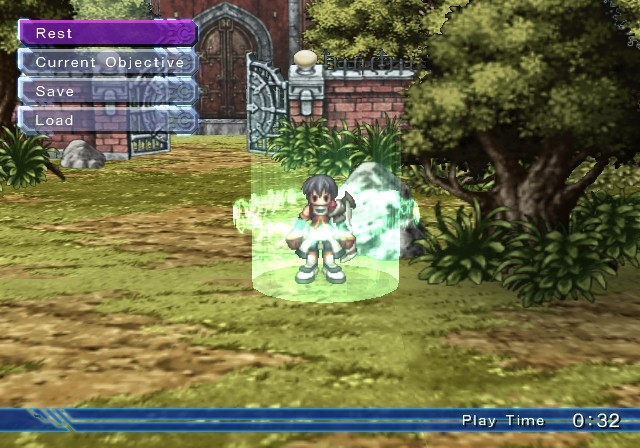

アルトネリコ2 世界に響く少女たちの創造詩
Complete spoiler-safe walkthrough and completion hub for メタ・ファルス. Navigate the Phase 1 route split between ルカ and クローシェ, resolve all インフェルスフィア and Cosmosphere dives, rescue all 100 I.P.D. citizens, and bypass the Phase 5 ラキ localization soft-lock.
| Japanese Title | アルトネリコ2 世界に響く少女たちの創造詩 |
|---|---|
| Platform & Editions | PlayStation 2 (Japanese Original / NISA English / Fan Patch Project Metafalica) |
| Story Structure | Phase 1 to Phase 5 · 4 Endings (ルカ, クローシェ, ジャクリ, ココナ) |
| Collectibles | 100 I.P.D. Rescues · 3 Cosmospheres · 5 インフェルスフィア Levels |
| Heroine Growth | Battle EXP advances Vanguards only; Reyvateils level strictly via デュアルストール |
On unpatched North American PS2 copies, fighting ラキ freezes permanently when she uses her scripted move フラクタルチェンジ during Defense Phase 3 (Turn 6). Win cleanly on retail copies by bursting her down in 5 turns or fewer via レプレキア. See Missables for exact setup numbers.

Section Hub & Completion Trackers
Beginner Tips
Active defense timing, Dualstall pacing, radar usage, and safe save placement.
Play Order & Endings
All four ending branches, Paradigm Shift holds, and New Game+ planning.
Missables & Bugs
Exclusive Talk Topics, early Phase 5 zone cutoffs, and NISA Raki freeze counter.
Main Story (Ph.1–5)
Step-by-step progression from Pastalia and Verticave through Sol Marta.
Luca Cosmosphere
Lv.1 through Lv.9 dive choices, Song Magic unlocks, and bridal costume route.
Cloche Cosmosphere
Lv.1 through Lv.9 including Lv.6-R split, Redo Charm nodes, and costumes.
Jacqli Cosmosphere
Lv.1 through Lv.9, Level 7-C/7-P split, Lv.8-2 branch, and ending lock requirements.
I.P.D. 100 Rescue Log
Regional breakdown across Lv.1–Lv.9, Diver's Therapy items, and Fan Club perks.
Party Builds & Gear
All 5 Vanguards, 3 Reyvateils, Dualithnode setups, and endgame weapon targets.
Leaf & Shop Exploits
Item Menu shared gear duplication loop and 1-battle synthesis profit routing.